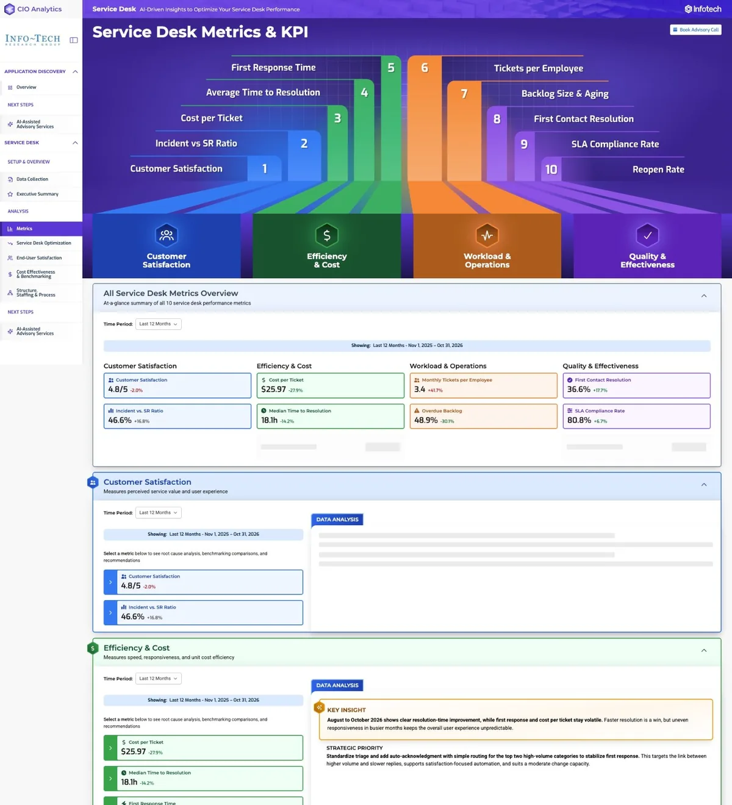
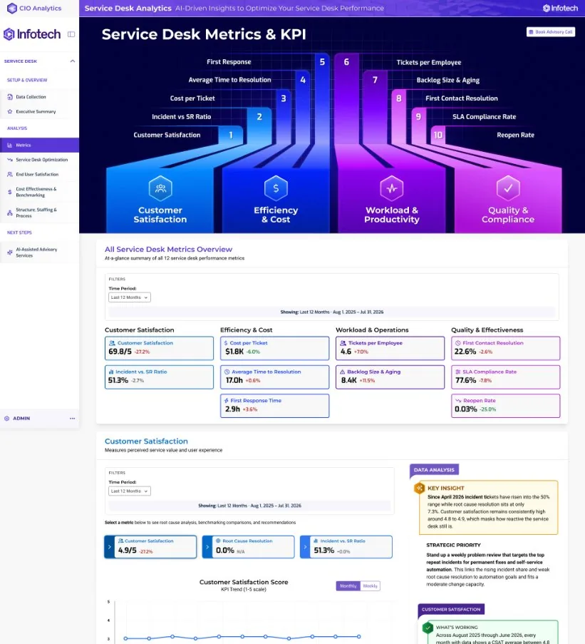
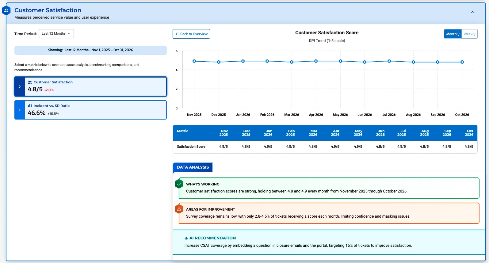
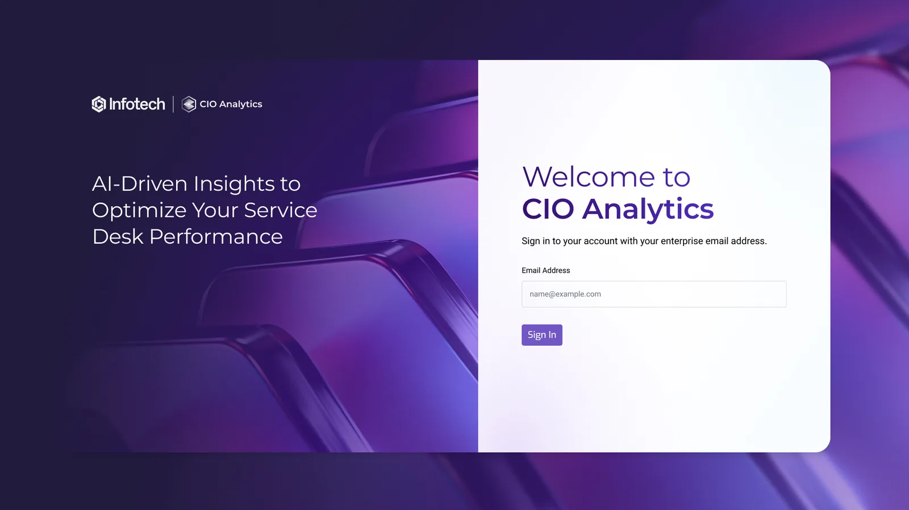
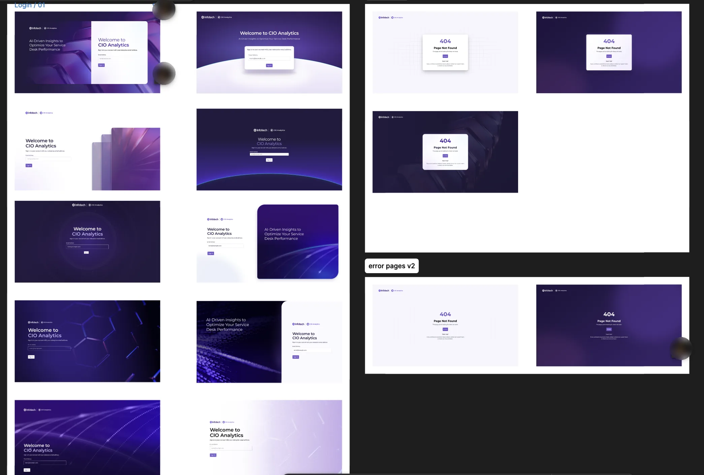
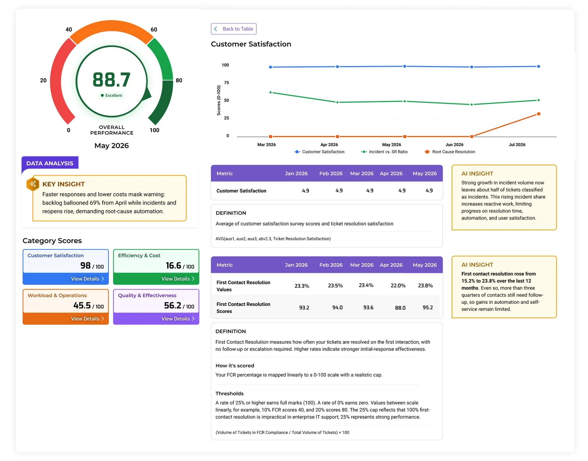

CIO Analytics
Infotech’s platform for running the IT department from a single view: data, insights, benchmarks and advice in one place.
Marketing page ↗ (opens in a new tab) I coded this page; the Infotech design team designed it.
- Role
- Product design & front-end development
- Team
- Back-end developers & data engineers
- Company
- Infotech
- Timeline
- 2025–now
- Tools
- Figma · Rails · Tailwind CSS · Highcharts
My role
- Product designer and front-end developer, from Figma to production code.
- Worked with back-end developers and data engineers, who built the data platform.
What I designed
- Key Insights: a component used app-wide.
- Design system: updates and the purple rebrand.
- Charts and tables: redesigned for easier scanning.
- Save-syncing flow: for data that several people edit.
- Monthly summary email: rebranded and mobile-friendly.
- Login and error pages: accessible to WCAG 2.2 AA.
What I coded
- Stack: Rails, Tailwind CSS, ViewComponent, Hotwire.
- Dashboards: Highcharts, through the in-house charting engine.
- Pinned section nav: for long dashboard pages.
- Brand and marketing: the rebrand, the summary email and the marketing page.
- Deploys: to production in the US, Canada and Europe.
Overview
- One platform for IT data, business intelligence, AI and Infotech’s advisory.
- Turns IT data into dashboards and insights.
- Benchmarks results against peers and pairs them with Infotech’s research.
The challenge
- IT leaders have data in many systems and little time to read it.
- Every layer has to stay clear and actionable: data, benchmarks, advice and AI insights.
Process & key decisions
Key Insights component
- Problem: the visual hierarchy of the Insights column wasn’t consistent or obvious.
- Goal: one hierarchy to use throughout the app.
- Title: a more prominent Data Insights title and icon.
- Charts: designed to sit inside a Key Insight.
- Subsections: consistent titles and styling, such as AI Recommendation and Response Coverage.
- AI icons: consistent iconography for AI content.
- Coded: I built the redesign and rolled it out to every Insights panel across the app.


Metrics drilldown views
The Service Desk Metrics & KPI page tracks ten core service desk metrics in four categories: Customer Satisfaction, Efficiency & Cost, Workload & Operations, and Quality & Effectiveness. In the current version, each category lists its metrics with an AI-written analysis, but there’s no way to dig into a single metric.
The improved version adds drilldown views. Select a metric and the category expands to show its 12-month trend, the monthly values in a table, and an analysis of what’s working, what needs improvement and an AI recommendation, so leaders can see why a number moved and what to do about it.


Current. Each category lists its metrics and an AI analysis. Click to see the full page.


Improved. Every category opens into drilldown views for its metrics. Click to see the full page.


Save-syncing flow
- Problem: a second save during a sync could overwrite the first.
- Decision: the status message sits beside the Save button, so it’s always visible.
- Decision: unsaved changes are never discarded without asking.
- Decision: a delay looks different from a failure.
Login & error pages
- Explored: many sign-in directions, carried through to the error pages.
- Accessibility: all text sits on a solid card, so contrast holds over any background.


The final sign-in page.


Rough work in Figma: sign-in explorations and two rounds of 404 pages. Click to enlarge.
More screens



Result
- Live with client organizations across the US, Canada and Europe.
- Used day to day by IT leaders to understand their service desk and act on it.